Межсетево́й экра́н, сетево́й экра́н — программный или программно-аппаратный элемент компьютерной сети, осуществляющий контроль и фильтрацию проходящего через него сетевого трафика в соответствии с заданными правилами.
Другие названия (в данном контексте смысл имеют один и тот же):
Брандма́уэр Windows — встроенный в Microsoft Windows межсетевой экран. Появился в Windows XP SP2. Одним из отличий от предшественника (Internet Connection Firewall) является контроль доступа программ в сеть. Брандмауэр Windows является частью Центра обеспечения безопасности Windows.
Основным нововведением брандмауэра Windows 7 является одновременная работа нескольких сетевых профилей.
Запуск из командной строки или окна Выполнить (WIN+R): control.exe /name Microsoft.WindowsFirewall
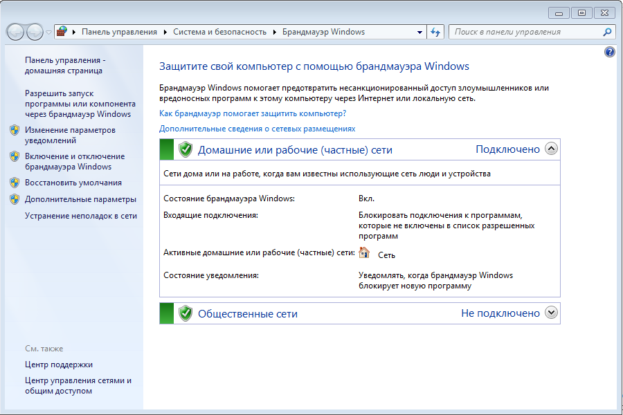Настройка параметров брандмауэра.
В левой панели присутствуют две ссылки:
Обе ссылки открывают окно настройки параметров.
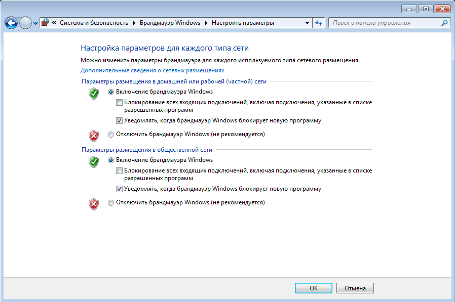Для каждого профиля можно задать собственный набор параметров. Если брандмауэр включен, логично также включить уведомления о блокировке новой программы, чтобы ее поведение не вызывало у вас недоумения в случае блокировки. В диалоговом окне блокировки также имеется возможность разрешить или заблокировать программу для каждого профиля.
Сброс настроек брандмауэра. Чтобы восстановить стандартные значения брандмауэра, щелкните Восстановить умолчания в левой панели. В открывшемся окне подтвердите свое желание вернуть все на круги своя.
Разрешение запуска программ и компонентов. Брандмауэр Windows 7, конечно, включен по умолчанию, а его стандартные настройки подойдут большинству пользователей. Если вам требуется настроить разрешения для конкретной программы или компонента ОС, щелкните Разрешить запуск программы или компонента через брандмауэр Windows в левой панели и в открывшемся окне нажмите кнопку Изменить.
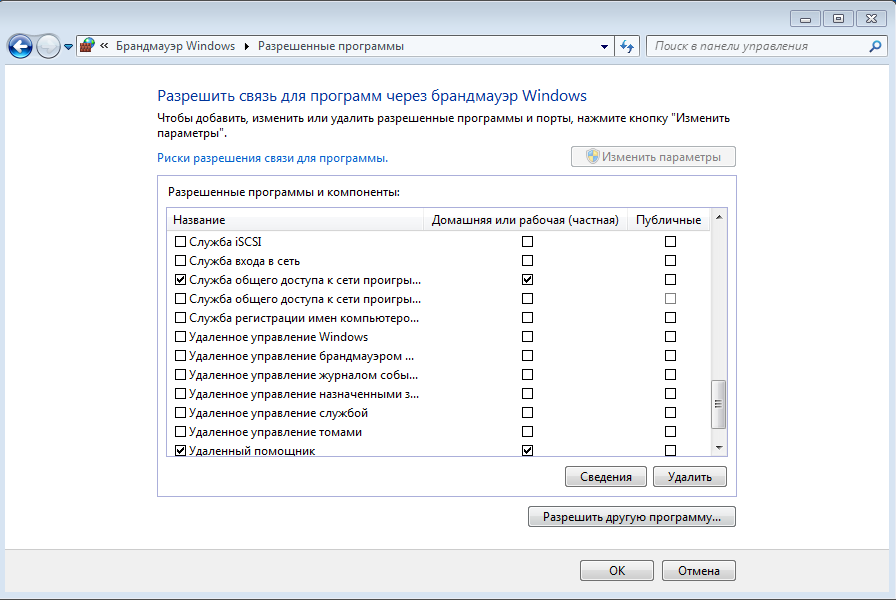Можно посмотреть сведения о каждой из программ которые там находжятся.
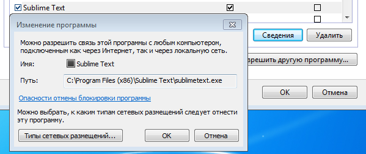Щелкните необходимый компонент и установите разрешения для каждого профиля. Для добавления в список конкретной программы, нажмите кнопку Разрешить другую программу.
Добавьте туда какую-либо программу, которой для нормальной работы требуется интернет соединение, и посмотрите, что будет и затем удалите оттуда добавленную программу.
Рекомендация по использованию брандмауэра Windows 7 очень проста - он должен быть включен всегда, если вы не используете сторонний фаервол. Тем самым вы обезопасите себя, например, от проникновения распространенных сетевых червей. В большинстве случаев домашним пользователям подойдут стандартные параметры брандмауэра. Если же вы используете сторонний фаервол, то при его установке встроенный брандмауэр, скорее всего, будет отключен, во избежание конфликтов между двумя программами, выполняющими одинаковую функцию.
Это базисный функционал. У него есть расширенный режим, который реализован с помощью оснастки консоли управления Microsoft (MMC). В левой панели щелкните Дополнительные параметры и перед вами предстанет Брандмауэр Windows в режиме повышенной безопасности.
Запуск из командной строки или окна Выполнить (WIN+R): wf.msc. Либо в меню пуск выполнить поиск и найденный компонент запустить от имени Администратора.
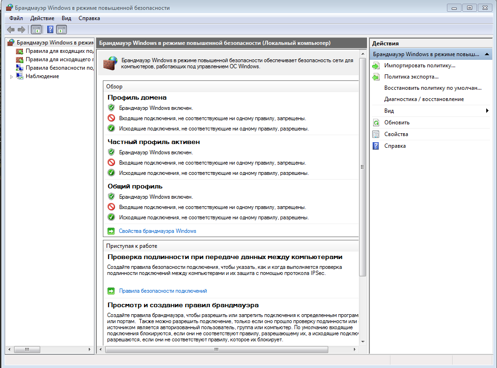Элемент панели управления, описанный выше, предназначен для домашних пользователей, а оснастка консоли MMC ориентирована на ИТ-специалистов. В режиме повышенной безопасности брандмауэр позволяет конфигурировать не только локальный компьютер, но и удаленные компьютеры и объекты групповой политики.
Для всех профилей уже существуют предустановленные наборы правил. Безусловно, вы можете изменить их или добавить собственные правила для входящих и исходящих подключений. Создание правил реализовано с помощью мастера. Например, чтобы заблокировать приложению доступ в Интернет, щелкните Правила для исходящего подключения в левой панели, а затем - Создать правило в правой панели. Мастер создания правил проведет вас через несколько этапов.
Этапы просты, и в особых пояснениях не нуждаются. Данные правила можно создать как для входящих подключений так и для исходящих подключений. Так же можно выбрать службу или вообще программы, можно заблокировать программе доступ на какой то определённый порт и так далее. Удаление правила происходит из контекстного меню через правую кнопку мыши.
Добавьте какую-либо программу следуя данному мастеру. Плюс отключите любое уже действующее правило для брандмауэра.
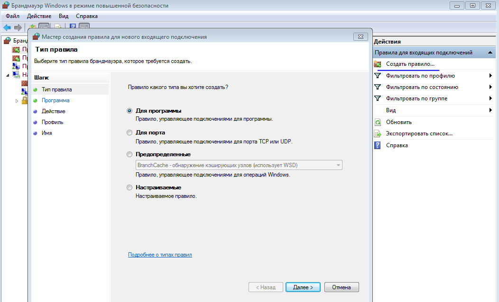 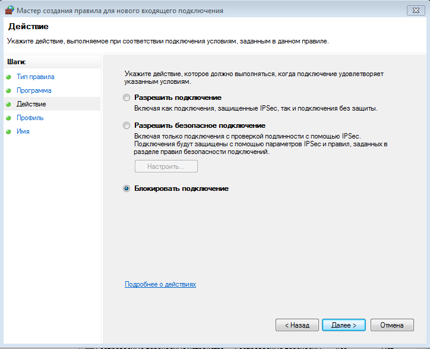 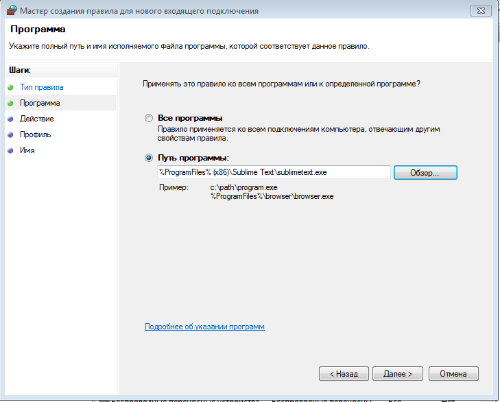 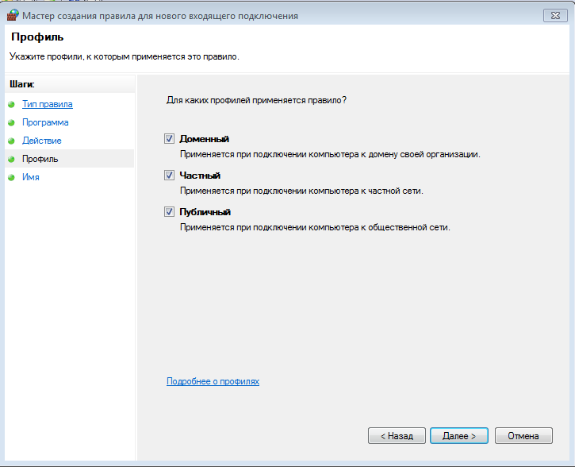 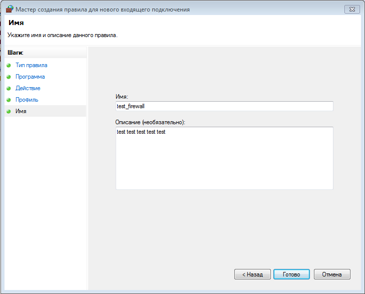 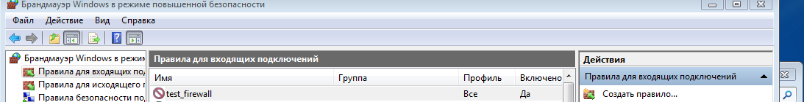